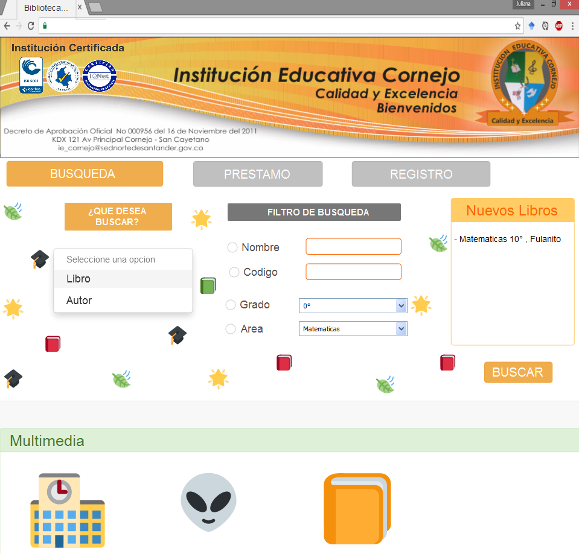
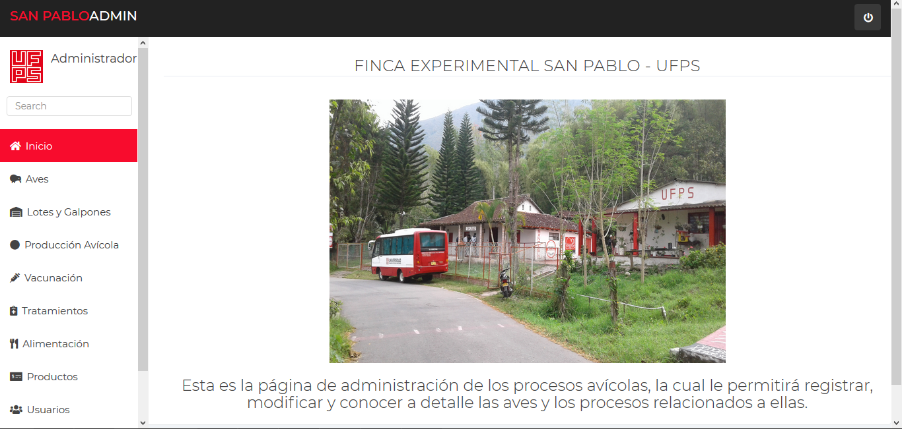

Trabajos y proyectos universitarios
SISTEMA DE BASES DE DATOS PARA LA BIBLIOTECA DE LA INSTITUCION EDUCATIVA CORNEJO
- La cual consistío en crear una base de datos como aplicativo web para la biblioteca escolar de la INSTITUCION EDUCATIVA CORNEJO. Con el propósito de usarse como medio informativo y facilitador para la consulta de los textos; por parte de los estudiantes, docentes y administrativos.
En este trabajo desempeñe el papel full-stack developer, además de administradora de bases de datos.
Este proyecto se realizó en la materia de bases de datos bajo la coordinación del Ing. René Angarita

DESARROLLO DE SOFTWARE PARA LA CREACION DE UN MAPA TACTIL DE LA UNIVERSIDAD FRANCISCO DE PAULA SANTANDER
- El principal enfoque de este proyecto fue brindar una herramienta de ayuda a aquellas personas vinculadas a la universidad Francisco De Paula Santander por ejemplo: docentes, estudiante, padres de familia; o algún visitante externo.
Una herramienta que se encuentre al alcance de todos, con la cual, la ubicación dentro del plantel educativo sea mejorada y facilitada. Ya que muchas de estas personas desconocen la infraestructura de la universidad, y es un problema a la hora de realizar trámites, asistir a una clase, entre otros procesos dentro de la misma.
Para este trabajo desempeñe el papel de investigadora y documentadora. Es importante mencionar que no se realizó el desarrollo como tal.
Este proyecto se realió en la materia de seminario investigador II bajo la dirección del Ing. Carlos Pardo.
ANÁLISIS, DISEÑO E IMPLEMENTACIÓN DEL SISTEMA DE INFORMACIÓN PARA LA GESTIÓN DE LOS SERVICIOS AVÍCOLAS DE LA FINCA EXPERIMENTAL SAN PABLO - UFPS
(SIGSAFE)
- El sistema de información para la gestión de los servicios avícolas de la finca experimental San Pablo – UFPS (SIGSAFE), surge como un proyecto de aula dando respuesta al problema de la falta de sistematización de sus procesos productivos avícolas, del cual se obtienen índices representativos de errores en la gestión de la información y tiempos innecesarios en las consultas y búsquedas de datos.
Los procesos avícolas tienen gran importancia en el desarrollo productivo-económico de la finca y se llevan a cabo con fines académicos, por parte de los estudiantes practicantes e investigadores de la Facultad de Ciencias Agrarias y del Ambiente de la universidad.
Para este trabajo desempeñe el papelde investigadora, documentadora, full-stack developer, además de administradora de bases de datos.
Este proyecto se encuentro en desarrollo actualmente, y se inicializó en la materia de analisis y diseño de sistemas de información e ingeniería de software bajo la dirección de la Ing. Judith del Pilar Rodríguez.
